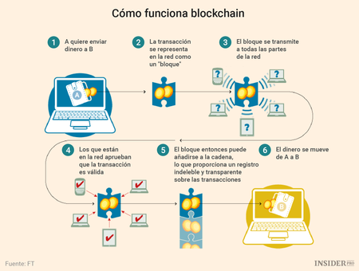

Tecnología de interés
BLOCKCHAIN
¿Qué es?
La cadena de bloques, más conocida por el término en inglés blockchain,
es un registro único, consensuado y distribuido en varios nodos de una red.
En el caso de las criptomonedas, podemos pensarlo como el libro contable donde
se registra cada una de las transacciones.
En cada bloque se almacena:
»una cantidad de registros o transacciones válidas,
»información referente a ese bloque,
»su vinculación con el bloque anterior y el bloque siguiente a través del hash
de cada bloque ─un código único que sería como la huella digital del bloque.
Por lo tanto, cada bloque tiene un lugar específico e inamovible dentro de la cadena,
ya que cada bloque contiene información del hash del bloque anterior. La cadena completa
se guarda en cada nodo de la red que conforma la blockchain, por lo que se almacena una
copia exacta de la cadena en todos los participantes de la red.
¿Por qué es tan segura?
Al ser una tecnología distribuida, donde cada nodo de la red almacena una copia exacta
de la cadena, se garantiza la disponibilidad de la información en todo momento. En caso
de que un atacante quisiera provocar una denegación de servicio, debería anular todos los
nodos de la red, ya que basta con que al menos uno esté operativo para que la información
esté disponible.
Por otro lado, al ser un registro consensuado, donde todos los nodos contienen la misma
información, resulta casi imposible alterar la misma, asegurando su integridad. Si un atacante
quisiera modificar la información en la cadena de bloques, debería modificar la cadena completa
en al menos el 51% de los nodos.

Por último, dado que cada bloque está matemáticamente vinculado al bloque siguiente, una vez
que se añade uno nuevo a la cadena, el mismo se vuelve inalterable. Si un bloque se modifica su
relación con la cadena se rompe. Es decir, que toda la información registrada en los bloques es
inmutable y perpetua.
De esta forma la tecnología de blockchain nos permite almacenar información que jamás se podrá
perder, modificar o eliminar.
En blockchain los datos están distribuidos en todos los nodos de la red. Al no haber un nodo central,
todos participan por igual, almacenando y validando toda la información. Se trata de una herramienta muy
potente para comunicarnos y almacenar información de forma confiable; un modelo descentralizado donde la
información es nuestra, ya que no dependemos de una compañía que brinde el servicio.
Usos del blockchain
cualquier tipo de información que necesite ser preservada de forma intacta y que deba permanecer disponible
puede ser almacenada en blockchain de manera segura, descentralizada y más económica que a través de
intermediarios. Además, si esa información se guarda cifrada se puede garantizar su confidencialidad,
ya que solo quien cuente con la llave de cifrado pueda acceder a ella.
Como por ejemplo:
» Registros de salud, podrían ser unificados y almacenados en blockchain. De esta forma, la historia médica
de cada paciente estaría segura y a la vez disponible para cada médico autorizado, independientemente del centro
de salud donde se haya atendido el paciente.
» Internet de las Cosas (IoT), donde el reto recae en los millones de dispositivos conectados a Internet que deben
ser gestionados por las empresas proveedoras. En unos años, el modelo centralizado no va a soportar tantos
dispositivos, sin contar que muchos de ellos no son lo suficientemente seguros. Con blockchain los dispositivos
pueden comunicarse a través de la red de manera directa, segura y confiable, sin intermediarios.
» Documentos: blockchain permite registrar compras, escrituras, documentos o cualquier tipo de bien digital y
que no pueda ser falsificado.